Computer Controlled Machining
Software needed
We first start by installing V-Carve Pro. It can be downloaded from https://www.vectric.com/free-trial/vcarve-pro, and clicking on the download button and instead of creating an account, guest downloading.
We will also need Fusion 360 but I already have that installed.
CNC terminology
Assignment
For our assignment we have been tasked with using 12 to 15mm plywood
We are using a 6mm flat end mill, cut depth= tool diameter, therefore it will take 3 cycles of cutting at multiple depths
We can do 6+6+3.1 for example to completely cut through the board.
3D modelling
I first started by modelling the item that I wanted to be assembled from 15mm plywood. In this case, since I am considering doing a motorised standing desk for my final project, I'll model a small scaled down desk. This can be used to demo cutting of the table top or legs.
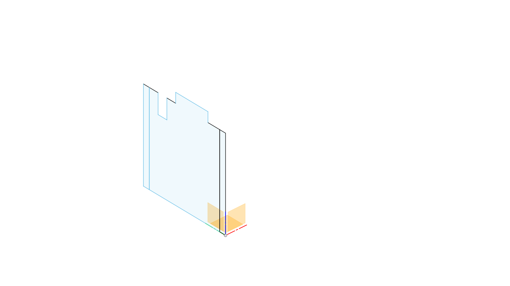I started by sketching one of the leg pieces.
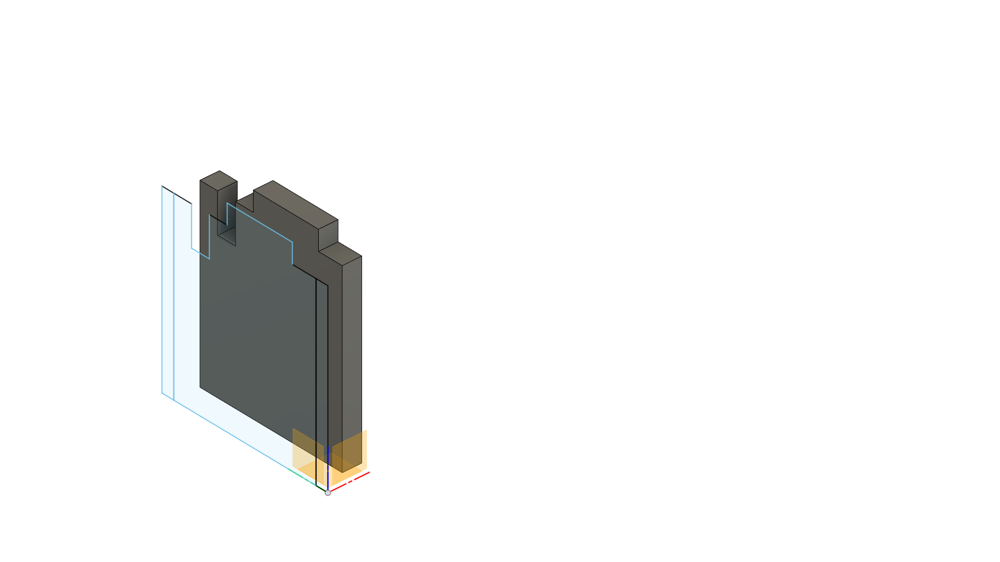I then used extruded the sketch by the thickness of the plywood provided (15mm) and offset it.
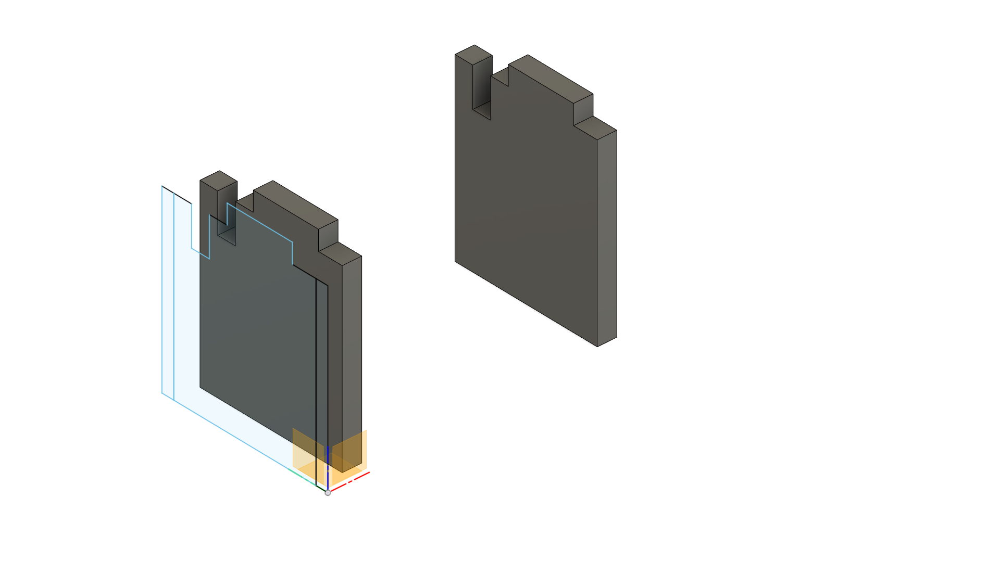I then extruded the other leg and offset it.
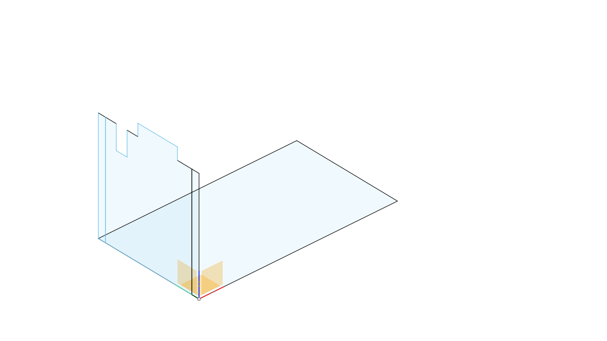I then sketched a rectangle which will be the tabletop.
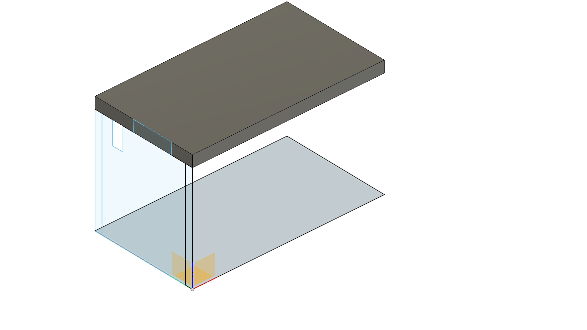I then extruded it by the thickness of the plywood, I'll cut this body later.
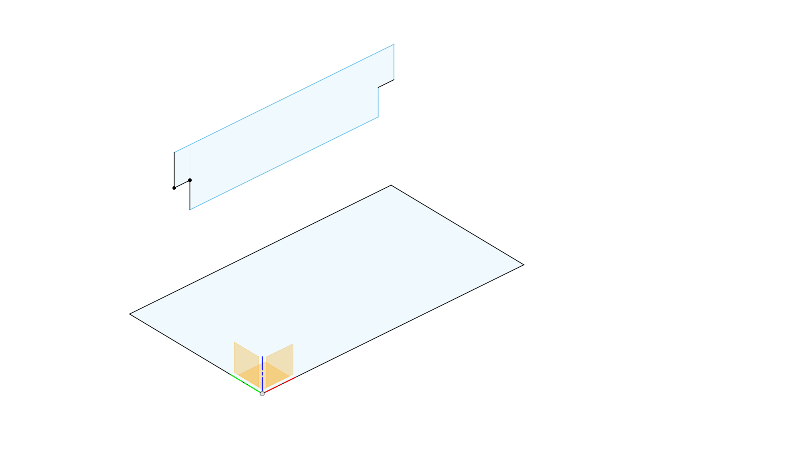I then sketched a middle support for the desk.
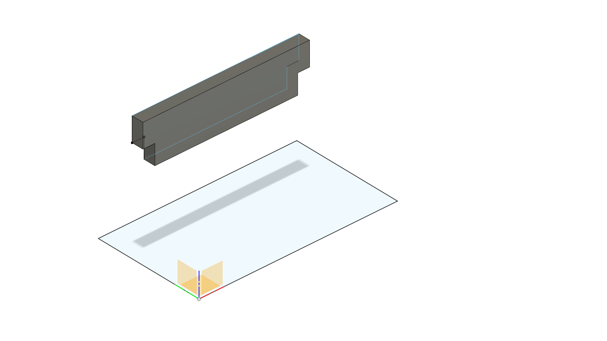Extruded the middle support.
I then proceeded to cut the tabletop, using the bodies of the leg as the tool bodies such that the table top would be able to fit onto the legs.
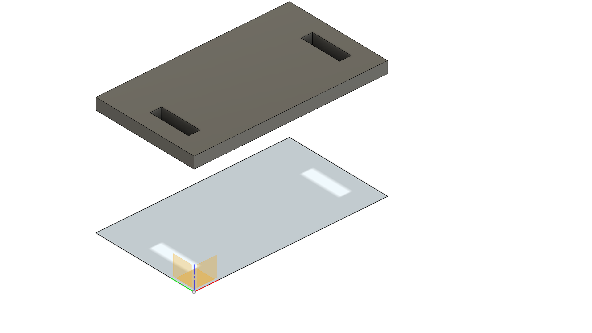 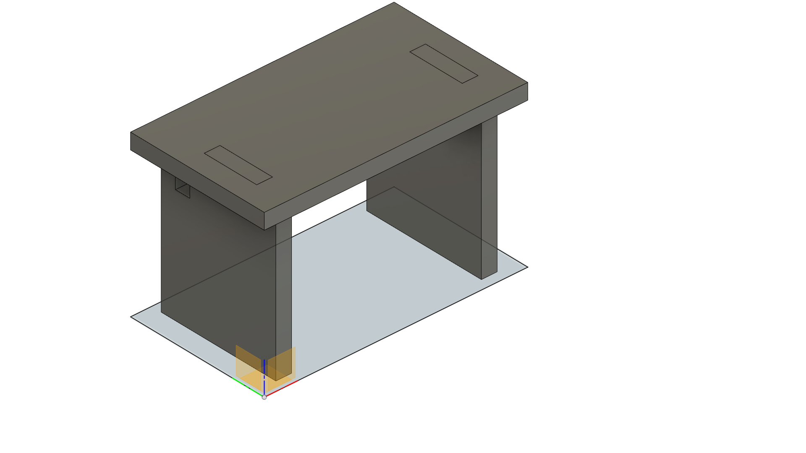I then created sketches of the various surfaces such that I would be able to cut them using the CNC machine.
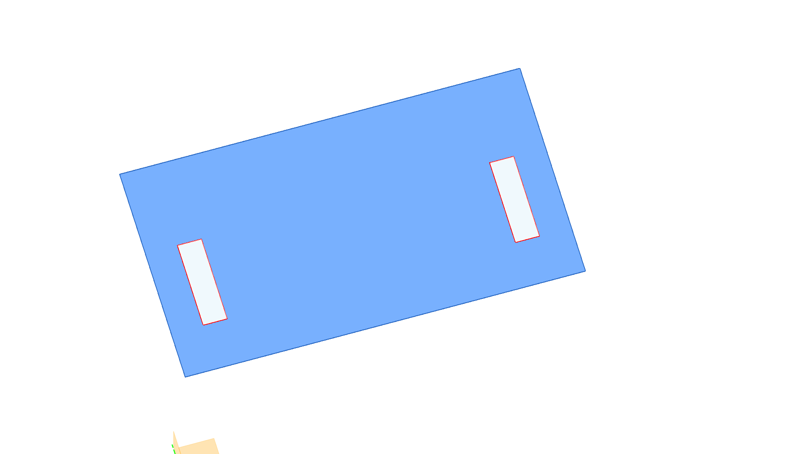 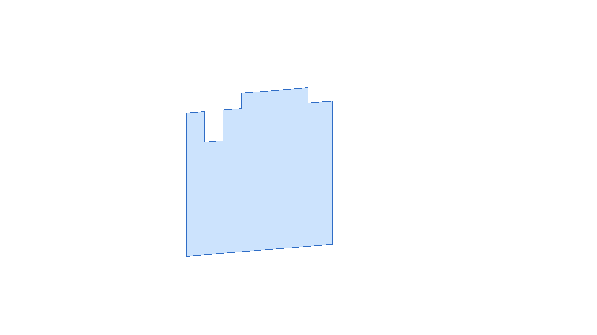Now that modelling is done, I can now import my sketches into VCarve Pro.
VCarve Pro
When we first open the VCarve Pro application, we are greeted by this:
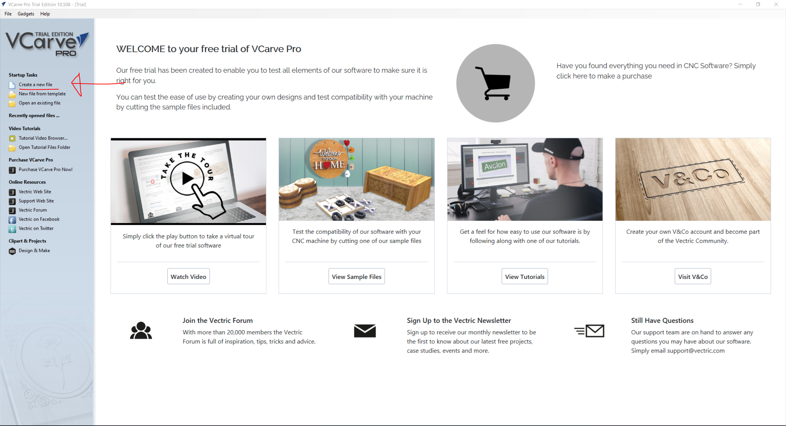We'll create a new file
Defining our work area
Next, enter the dimensions of the piece of wood that we will be working on. In this case, we are working with 1200mm X 1200mm plywood with a thickness of 15mm.
We'll enter a job size of 1200mm for both the X and Y which is approximately 4 ft. We'll be using plywood with a thickness of 15mm so enter that in as thickness as well.
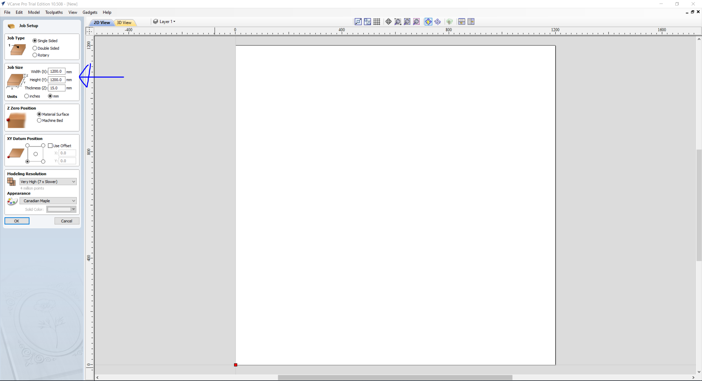Proceed to press the 'OK' button
Importing our sketches that we want to cut
We then import our sketches:
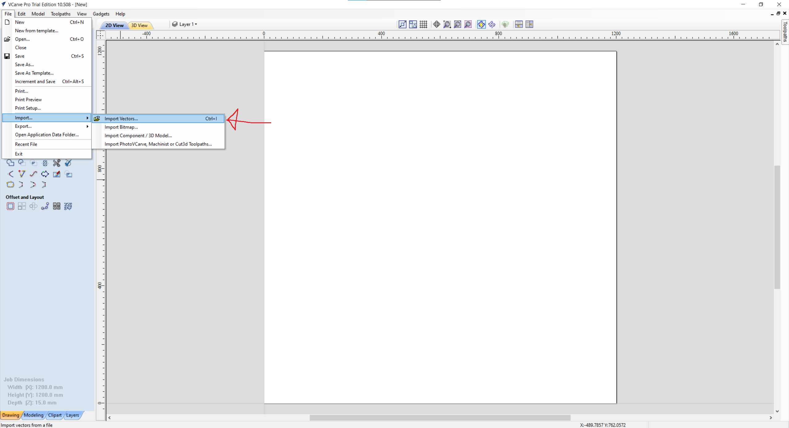I have 2 identical legs so I'll import my leg dxf twice and tabletop and middle support once.
Editing tools

We can use the move tool by dragging and releasing to select what we want to move followed by clicking and holding on the middle of the dxf that we want move. Don't click and hold on other boxes as it will extend the sketch, contorting the sketch and changing the design.

Adding dog bones and tabs
Now that we have imported our vectors, we'll need to add dog bones and tabs.
Dog bones will
Dog bones are for
We can add dog bones

Tabs are
How to secure the wood when the CNC machine is cutting, use vice for smaller pieces, use double sided tape for foam, for us use screws to secure the wood
Use sacrificial layer so that the endmill does not cut into the machine bed
Do squaring to ensure the bed and as a result the material is perfectly level.
Use dust collector to suck up the saw dust or wood chips.
Use vcarvepro
Use fusion 360 cam module
Use vernier caliper to ensure material is of appropriate thickness,
Test fit construction: Play around with the clearance to ensure a tight fit regardless of the package being disassembled multiple times.
Put in T bone or dog bone
Use tab stop
Onion skinning the thing for aesthetic purposes
Contour cuts all the way through, pocket cuts parts of the way, no all the way through
Minimum 300x300 mm , largest is 1.2m x 1.2m thickness is 12~15mm.
NC-EASY